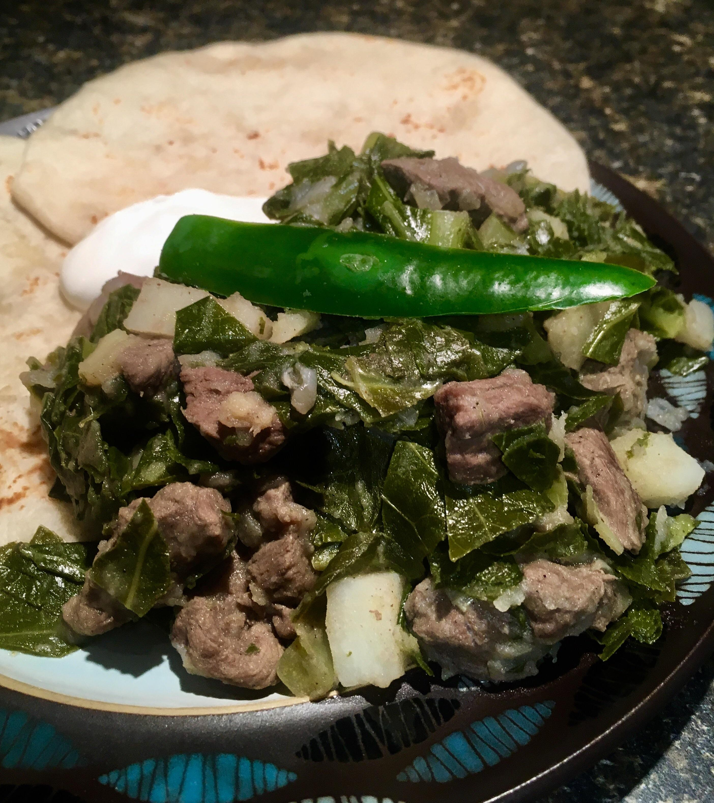

Gomen Besiga is a variation of Gomen (Ethiopian Collard Green Salad) – but includes meat. It’s quite popular in Ethiopia among meat lovers as a healthier option among other meat dishes. Gomen Besiga can be served as an entrée or side dish, depending on your preference. But, it’s typically served during holidays and special occasions in Ethiopia.
Ingredients
1 medium-large bowl spinach
½ kg beef
3 sliced onions
3 cloves crushed garlic
3 green chili pepper
½ tbsp black pepper
3 tbsp niter kibbeh (Ethiopian clarified butter)
Steps
Begin by preheating a pot, then add the beef to it.
When the beef browns, add in the garlic and onions and continue cooking for around 5 minutes.
Next, add the spinach and continue cooking and stirring for 15 more minutes.
Finally, add the black pepper, and niter kibbeh to the mix, continue cooking for around 3 more minutes and add some salt.